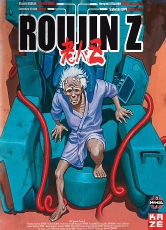

#4298 Roujin Z
 
 IMDB-Wertung: 6.9 / 10
IMDB-Wertung: 6.9 / 10  Metascore: 0
Metascore: 0 
Im 21. Jahrhundert scheint es endlich eine Lösung für das Problem der Überalterung der Gesellschaft zu geben. Das japanische Gesundheitsministerium stellt ein Pflegebett vor, das vollautomatisch die Versorgung der Senioren übernehmen kann. Der Witwer Kijuro Takazawa ist der erste, an dem diese revolutionäre Maschine getestet werden soll. Doch kann eine Betreuung ohne menschliche Wärme und Aufmerksamkeit überhaupt funktionieren? Das fragt sich auch Takazawas bisherige Pflegerin Haruko. Als sie sogar Notrufe von ihm empfängt, unternimmt sie alles, um ihm zu helfen. Leider hat niemand damit gerechnet, dass der Super-Computer eine ganz eigene Methode entwickelt, um den alten Herrn aus dem Ministerium zu befreien ...
Jahr: 1991
Dauer: 79 Minuten
FSK: 12
Land: Japan Studio: AV Visionen FilmverleihTonspuren: DTS - ,
Untertitel: Deutsch,
Auflösung: 1080p (1920x1080) Größe: 5591 MB
Genre: Animation/Trick, Komödie, Drama, Sci-Fi, Thriller
Regisseur: Hiroyuki Kitakubo
Drehbuch: Durian Sukegawa
Soundtrack:
Darsteller:
- Chisa Yokoyama als Haruko
- Toni Barry als Haruko, 1994
- Shinji Ogawa als Terada
- Allan Wenger als Terada, 1994
- Jana Carpenter als Norie, 1994
- Kôji Tsujitani als Maeda
- Adam Henderson als Maeda, 1994
- John Fitzgerald Jay als Hasegawa, 1994
- Chie Satô als Nobuko
- Ian Thompson als Takazawa, 1994
- Barbara Barnes als Nobuko, 1994
 Sean Barrett als Ache, 1994
Sean Barrett als Ache, 1994- Blain Fairman als Ache, 1994
- Nigel Anthony als Ache, 1994
- Nicolette McKenzie als Haru / Nurse, 1994
 Rica Matsumoto als Satô
Rica Matsumoto als Satô- Tamio Ôki als Tachibana
- Peter Marinker als Professor / Reporter, 1994
- Steven Crossley als Board, 1994 , uncredited
- Graydon Gould als Minawa, 1994 , uncredited
Datei: X:\HD-Anime\Roujin Z (1991, FSK12, 1920x1080).mkv seit 04.09.2016
Festplatte: Gemischt-01+Anime
 Es gibt insgesamt 43 Filme in der Gruppe 'HD-Anime'
Es gibt insgesamt 43 Filme in der Gruppe 'HD-Anime'